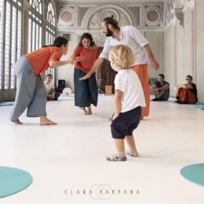

sab 21 nov · dalle 16:00
FILA A TEATRO 2026-2027 - XII edizione: Playjam
Sabato 21 novembre 2026 - Ore 16.00 e 17.30 FAGAGNA (UD) – 2° piano Palazzo Municipale piazza Unità d’Italia, 3 PLAYJAM Allegra Brigata Cinematica (Lombardia) Rassegna Piccolissimi Spettacolo Finalista di In – Box Verde 2024/2025 “Qui si gioca con le mani, qui si gioca con i…
 Indicazioni
Indicazioni
- Costi e prenotazioni
- Costo non indicato · Prenotazione non indicata
- Programma
- Programma da verificare. Apri la fonte ufficiale per orari e possibili aggiornamenti.
- In caso di maltempo
- Nessuna indicazione specifica pubblicata.
- Note
- Acquisito automaticamente dalla fonte.
L’EVENTO
Descrizione completa
FILA A TEATRO 2026 – 2027
XII edizione, da ottobre 2026 a marzo 2027
Fila a Teatro prosegue il suo viaggio e approda nei teatri, e non solo, con 17 spettacoli per ragazzi e famiglie. Non mancano le proposte dedicate ai piccolissimi con 3 appuntamenti. In calendario 5 prime regionali, compagnie da diverse regioni italiane e giovani talenti, laboratori interattivi, eventi dedicati, incontri curiosi e tante sorprese…
Un progetto ricco e articolato, che consente di dare continuità agli obiettivi centrali della rassegna: allentare il confine attore-spettatore, offrire spettacoli di atmosfera e momenti di interazione per crescere, imparare, meravigliarsi e costruire insieme nuovi immaginari .
L’approccio inclusivo, volto a ricevere e ospitare persone che presentano specifiche fragilità, caratterizza questa parte della rassegna che nel teatro di Zoppola avvia l’esperienza dell’accoglienza per il pubblico “sensibile” nel segno della cultura del rispetto, della cura e dell’ascolto.
Sabato 21 novembre 2026 - Ore 16.00 e 17.30
FAGAGNA (UD) – 2° piano Palazzo Municipale
piazza Unità d’Italia, 3
PLAYJAM
Allegra Brigata Cinematica (Lombardia)
Rassegna Piccolissimi
Spettacolo Finalista di In – Box Verde 2024/2025
“Qui si gioca con le mani, qui si gioca con i piedi , con la testa , con il cuore, braccia e gambe e suoni lievi”. PlayJam è una performance interattiva di danza e musica dedicata ai bambini 1-3 anni con due danzatrici e un musicista. Un evento in cui sperimentare la bellezza del guardare la danza e la potenza del “fare” la danza, mescolandole insieme. Dopo un momento iniziale in cui ognuno seduto sul suo cerchio azzurro guarda le performer danzare e ascolta i suoni live prodotti da strumenti musicali unici e originali, tutti possono entrare e danzare nello spazio scenico: la performance si costruisce insieme.
Una produzione di : ABC- Allegra Brigata Cinematica
Da un’idea di : Luca Citron e Serena Marossi
Ideazione coreografica : Serena Marossi
Coreografia e danza : Beatrice Pozzi e Laura Basterra Aparicio
Sonorità e musiche : Simone Moretti
Consulenza artistica : Makiko Ito
Oggetti scenici : Claudia Broggi
Formazione alla fascia 0-3 : Katia Pantalla
Età consigliata : 1 – 3 anni
Rivolto a gruppi di 30 persone alla volta.
Consigliata la presenza di un solo adulto per bambino.
Posti limitati, si consiglia l’acquisto dei biglietti online.
Maggiori info, biglietti e promozioni su www.filaateatro.it
Scarica il programma completo
IL PROGRAMMA
Programma e orari
Appuntamenti raccolti dalle fonti elencate. Dove manca un orario, non è ancora disponibile in questa scheda.
Programma pubblicato
- Ore 16.00 e 17.30
INFORMAZIONI UTILI
Prima di partire
- Controllare la fonte prima di partire.
ORGANIZZAZIONE